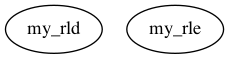

Master index
Index for marsbar/@maroi_matrix/private
Dependency Graph for marsbar/@maroi_matrix/private

Generated on Tue 01-Jun-2021 17:02:39 by
m2html
© 2003-2019
 Master index
Master index Master index
Master index